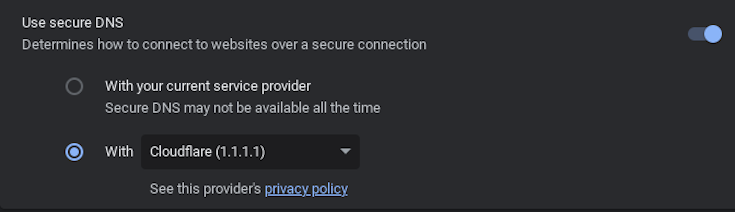
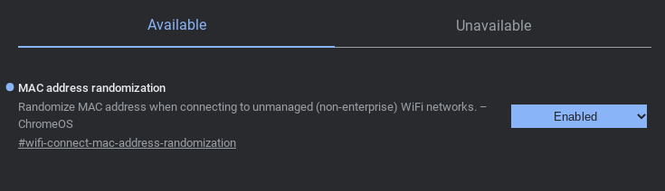

What you will need
- A brain.
- A chromebook
IMPORTANT: ALL YOUR DATA WILL BE DELETED WHEN POWERWASHING VIA DEVELOPER MODE
Executing on Chromebook
enter recovery mode on your Chromebook. This is done by pressing the power button (⏻), reload key (↻), and ESC key at the same time. Your screen should look one of the images below:


Press CTRL + D on this screen, then press enter.
It will now say something about "returning to secure mode" or that "OS verification is off". You will not actually be in developer mode, but the exploit will work regardless. Your screen should look like one of the images below:


or if it isn't blocked by system policy skip down a little On this screen, press enter again. This disable developer mode and powerwash the device
Once powerwashes just try that again until you get a screen without any sort of system policy block
press CTRL + D once you get on a "os verification is off" screen without system policy
What now?
well after the 5 minute timer is over you can press CTRL + ALT + →
Note that while unenrolled, it is recommended to add your personal account first, then add your school account, then switch between the two as needed. Mercury Workshop does not condone the use of SH1MMER or unenrolling to cheat in school.
The biggest challenges with unenrolling are connecting to the school network and taking state or national exams (since there are no kiosk apps anymore).
There are many methods to get a school Wi-Fi password while enrolled, including the policy netlog trick. While on a school account and unenrolled, you can bypass some network-level blocks by using a secure DNS such as Cloudflare 1.1.1.1 from chrome://os-settings/osPrivacy. It is also recommended to enable "MAC Address Randomization" in chrome://flags to stay hidden.
 To take a kiosk exam, the safest option is to re-enroll temporarily. Instructions for doing that are hosted at this TXT file. Saving a copy of this file for future reference is probably a smart move.
You can also use fakemurk as a way to enroll your device but stay in developer mode and have control over policies and extensions. You may need to use this to get WiFi passwords if chrome://net-export is blocked.
The Fog...
(Google's response, and why this might not be working for you)
Downgrading and unenrollment has been patched* by google. If your chromebook has never updated to version 112 before (check in chrome://version), then you can ignore this and follow the normal instructions. If not, unenrollment will not work as normal.
If you aren't willing to take apart your chromebook to unenroll, you can use an affiliated project, E-HALCYON to boot into a deprovisioned environment temporarily.
If you are willing to take apart your Chromebook to unenroll, then go to the guides
here: Unpatch and Unfog
Also see Darkn's great blog post here for the "pencil exploit".